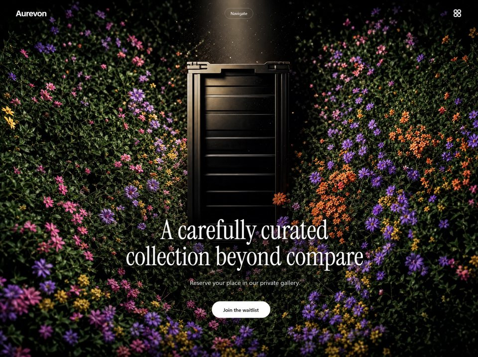

Rare Gallery
Curatedcuratedyilai-ai 公开页面
收录时间：2026-08-23正文：5,053 字符

本地预览图 · jpeg
完整提示词
Build a single-page luxury brand landing (navbar + full-viewport hero only). Stack: React 18 + TypeScript + Vite + Tailwind CSS 3. No extra UI kits. Use lucide-react only for the Flower2 icon. Page title: Aurevon. Root wrapper: bg-black. html, body { overflow-x: hidden }. Global reset: margin: 0; padding: 0; box-sizing: border-box.
Fonts Load Google Fonts exactly:
https://fonts.googleapis.com/css2?family=Instrument+Serif:ital@0;1&display=swap
Utility: .font-instrument { font-family: 'Instrument Serif', serif; }
Use Instrument Serif only for the hero H1 and overlay nav links. Logo, nav pill, body copy, and CTA use Tailwind’s default sans (ui-sans-serif, system-ui, …).
Easing (reuse everywhere)
Entrance: cubic-bezier(0.16, 1, 0.3, 1)
Menu overlay / hamburger morph: cubic-bezier(0.76, 0, 0.24, 1)
NAVBAR (fixed)
Fixed top-0 left-0 w-full z-50. Transparent until window.scrollY > 40, then bg-black/80 backdrop-blur-md. Transition: duration-500.
Inner bar: max-w-[1440px] mx-auto px-6 md:px-10 flex items-center justify-between h-16 md:h-20.
Left — logo
Text link “Aurevon”, text-white text-xl md:text-2xl font-semibold tracking-tight z-50.
Center — desktop only (hidden md:flex)
Pill button: px-5 py-2 rounded-full border border-white/20 text-white/90 text-sm hover:bg-white/10, items-center gap-2. Label Navigate when closed, Close when overlay is open. Toggles overlay.
Right — desktop only (hidden md:flex)
Flower2 from lucide-react: w-7 h-7 text-white/90.
Right — mobile (md:hidden)
Hamburger w-8 h-8, flex-col items-center justify-center gap-1.5, aria-label="Toggle menu". Two bars: w-6 h-[2px] bg-white. When open: top bar rotate-45 translate-y-[4px], bottom -rotate-45 -translate-y-[4px]. Morph duration-500 with overlay easing.
Navbar entrance (on load)
After 100ms, set mounted. Elements start opacity-0 -translate-y-4, end opacity-100 translate-y-0. duration-700 + entrance easing. Delays when mounted: logo 0ms, Navigate/hamburger 200ms, flower 400ms.
When overlay is open, set document.body.style.overflow = 'hidden'; restore on close.
FULL-SCREEN OVERLAY MENU
fixed inset-0 z-40 bg-black (under navbar z-50). Closed: opacity-0 invisible. Open: opacity-100 visible. Transition duration-700 + overlay easing. Center content: flex flex-col items-center justify-center.
Links, stacked gap-8, centered:
Home
Story
Collection
Inquire
Each: href="#", text-white font-instrument text-4xl md:text-6xl hover:opacity-60. Closed: opacity-0 translate-y-6. Open: opacity-100 translate-y-0. Duration 600ms, overlay easing. Stagger when opening: 150 + index * 80 ms (Home 150, Story 230, Collection 310, Inquire 390). Delay 0 when closing. Clicking a link closes the overlay.
HERO (full viewport)
<section class="relative w-full h-screen overflow-hidden flex items-end justify-center">
Background video (must be this exact URL)
https://d8j0ntlcm91z4.cloudfront.net/user_38xzZboKViGWJOttwIXH07lWA1P/hf_20260819_212700_3bb9329b-5c50-4257-a09b-ca85cf3654a3.mp4
Wrapper: absolute inset-0. Starts scale-105 opacity-0, after 300ms mounted becomes scale-100 opacity-100. Transition duration-[1400ms] + entrance easing.
<video>: that src, autoPlay muted loop playsInline, class="w-full h-full object-cover". No overlay gradient. Video is the only background.
Foreground (bottom-centered)
relative z-10 text-center px-6 pb-16 md:pb-24 max-w-4xl mx-auto
H1 (Instrument Serif):
font-instrument text-white text-[2.5rem] leading-[0.95] sm:text-5xl md:text-6xl lg:text-7xl mb-5 md:mb-6
Exact copy, with a line break only from sm up:
A carefully curated<br class="hidden sm:block" /> collection beyond compare
On mobile it is one wrapping line; from sm it is two lines: “A carefully curated” then “collection beyond compare”.
Subcopy
text-white/70 text-base md:text-lg mb-8 md:mb-10 max-w-md mx-auto
Copy: Reserve your place in our private gallery.
CTA
<a href="#"> “Join the waitlist”
inline-block px-8 py-3.5 bg-white text-black text-sm md:text-base font-medium rounded-full hover:bg-white/90
Hero text/CTA entrance
All three start opacity-0 translate-y-8, end opacity-100 translate-y-0. duration-900 + entrance easing. Mounted after 300ms, then delays: H1 400ms, subcopy 600ms, CTA 800ms. Delay 0 before mounted.
RESPONSIVE CHECKLIST (must match)
Breakpoint Behavior
Default / mobile
Nav height 64px, padding-x 24px. Hamburger only (no Navigate pill, no flower). Hero padding-bottom 64px. H1 2.5rem / line-height 0.95, no forced H1 break. Subcopy text-base, CTA text-sm. Overlay links text-4xl.
sm (640px)
H1 text-5xl; H1 line break appears.
md (768px)
Nav height 80px, padding-x 40px. Desktop: logo | Navigate pill | flower. Overlay links text-6xl. Hero pb-24. H1 text-6xl, mb-6. Subcopy text-lg, mb-10. CTA text-base.
lg (1024px)
H1 text-7xl.
No other sections, footer, or extra chrome. No video controls, no poster, no extra color overlays. Recreate navbar + hero pixel-faithful to these classes, timings, copy, and the CloudFront URL above.把上面的提示词完整复制到支持长文本的 AI 工具中，再按需要替换品牌名、配色与文案。提示词描述的是整页结构与动效节奏，生成后建议在真实浏览器里检查首屏加载和移动端表现。
来源与版权
该条目来自公开提示词页面，原始出处信息未随页面提供。
提示词文本与预览素材的版权归原作者或原平台所有，本站仅作索引与归档。若你是权利人并希望移除本条内容，请通过联系方式告知。
同分类提示词
暂无同分类条目。